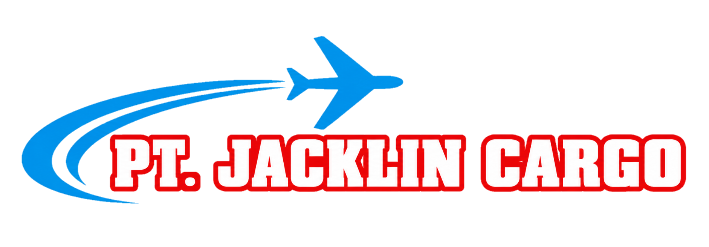
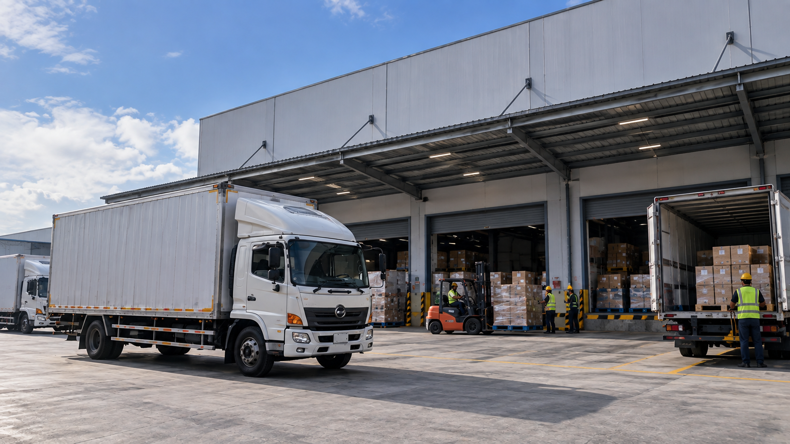

↗
01Cargo Darat
Pengiriman antarkota dan antarwilayah dengan armada yang disesuaikan dengan jenis dan volume barang.
Diskusikan →

Solusi logistik modern untuk pengiriman darat, laut, udara, project cargo, dan distribusi bisnis di seluruh Indonesia.
Direktur: Jacklin Tampanatu
PT Jacklin Cargo Express hadir sebagai mitra logistik untuk kebutuhan bisnis, distribusi, dan pengiriman cargo dengan pendekatan yang lebih terukur dan profesional.
Kami mengutamakan koordinasi yang jelas, penanganan cargo yang aman, serta solusi pengiriman yang disesuaikan dengan karakter barang dan tujuan. Mulai dari pengiriman reguler hingga kebutuhan project cargo dan distribusi volume besar.
Kebutuhan setiap bisnis berbeda. Karena itu layanan Jacklin dirancang fleksibel untuk cargo reguler, distribusi nasional, sampai pengiriman proyek.
Pengiriman antarkota dan antarwilayah dengan armada yang disesuaikan dengan jenis dan volume barang.
Diskusikan →Solusi pengiriman antar pulau untuk cargo umum, volume besar, dan kebutuhan container.
Diskusikan →Pilihan pengiriman untuk kebutuhan yang membutuhkan lead time lebih singkat dan terjadwal.
Diskusikan →Penanganan cargo besar, berat, mesin, kendaraan, alat proyek, dan kebutuhan khusus.
Diskusikan →Pengiriman dengan container untuk kebutuhan bisnis dan distribusi dalam skala lebih besar.
Diskusikan →Distribusi rutin dari gudang, supplier, cabang, hingga lokasi proyek dengan koordinasi terpusat.
Diskusikan →Kami percaya proses yang baik dimulai dari komunikasi yang baik. Setiap pengiriman membutuhkan perencanaan, koordinasi, dokumentasi, dan perhatian terhadap detail.
Jacklin Cargo Express melayani kebutuhan pengiriman antar kota dan antar pulau. Hubungi tim kami untuk mengecek rute dan solusi yang tersedia untuk tujuan Anda.
Ceritakan jenis cargo, asal, tujuan, dan kebutuhan waktu.
Tim menyusun opsi moda dan penanganan yang sesuai.
Cargo diproses dan dikoordinasikan menuju tujuan.
Dokumentasi dan konfirmasi penyelesaian pengiriman.
Kirim detail kebutuhan Anda. Form ini siap dipakai sebagai front-end dan dapat dihubungkan ke WhatsApp, email, atau backend perusahaan.